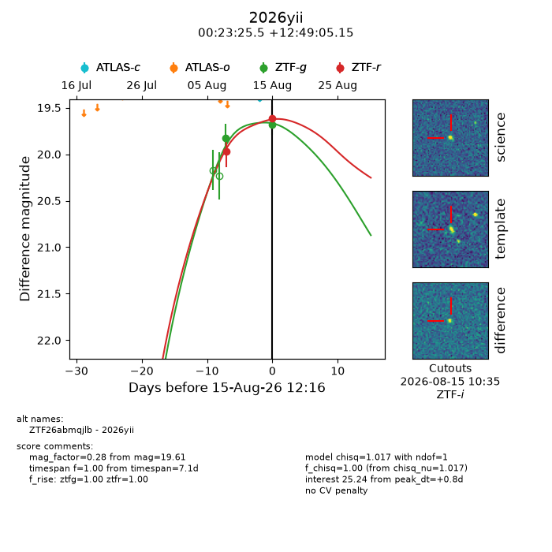
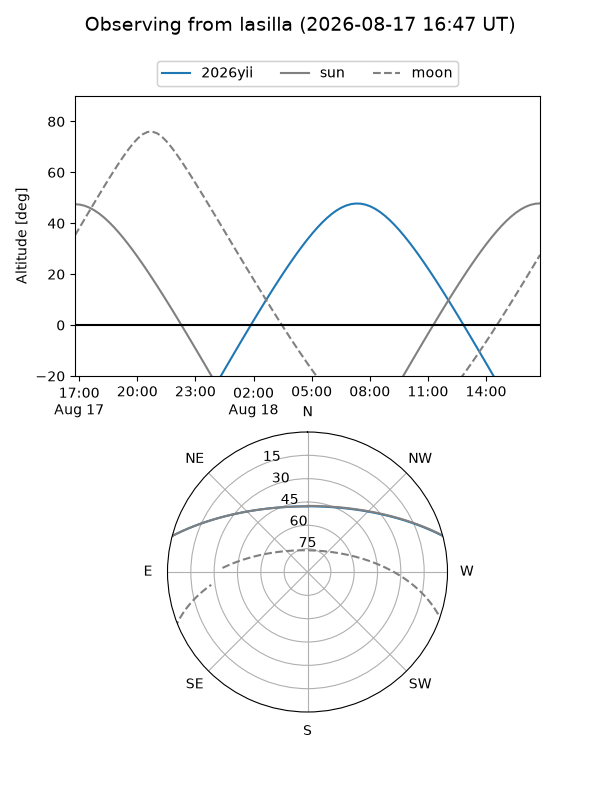
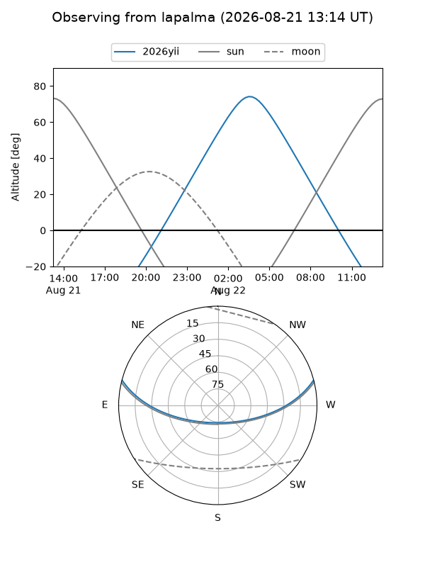
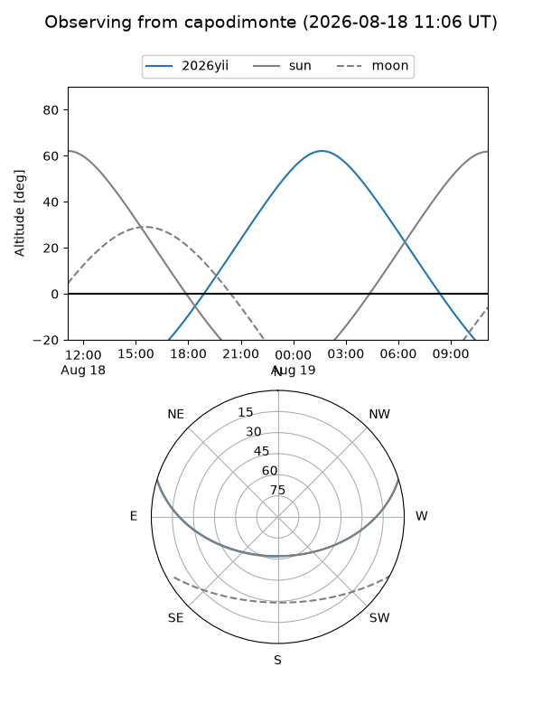
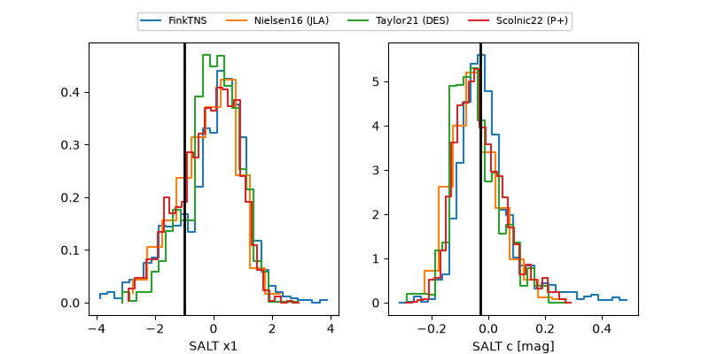

2026yii
Target 2026yii at 2026-08-15 12:19
Aliases and brokers:
FINK-ZTF: ztf.fink-portal.org/ZTF26abmqjlb
Lasair-ZTF: lasair-ztf.lsst.ac.uk/objects/ZTF26abmqjlb
ALeRCE-ZTF: alerce.online/object/ZTF26abmqjlb
YSE-PZ: ziggy.ucolick.org/yse/transient_detail/2026yii
TNS name: wis-tns.org/object/2026yii
Direct TNS query: direct search
alt names
ZTF26abmqjlb (ztf,fink_ztf)
2026yii (tns,yse)
Coordinates:
equatorial (ra, dec) = 5.8561,+12.81810
equatorial (HMS+DMS) = 00:23:25.47,+12:49:05.15
galactic (l, b) = (112.3883,-49.47930)
Flags:
TNS type: nan
peak dt: +0.8
Photometry:
last ztfg=19.68, ztfr=19.61
2 ztfg, 2 ztfr detections
Lightcurve

Visibility



Additional plots
